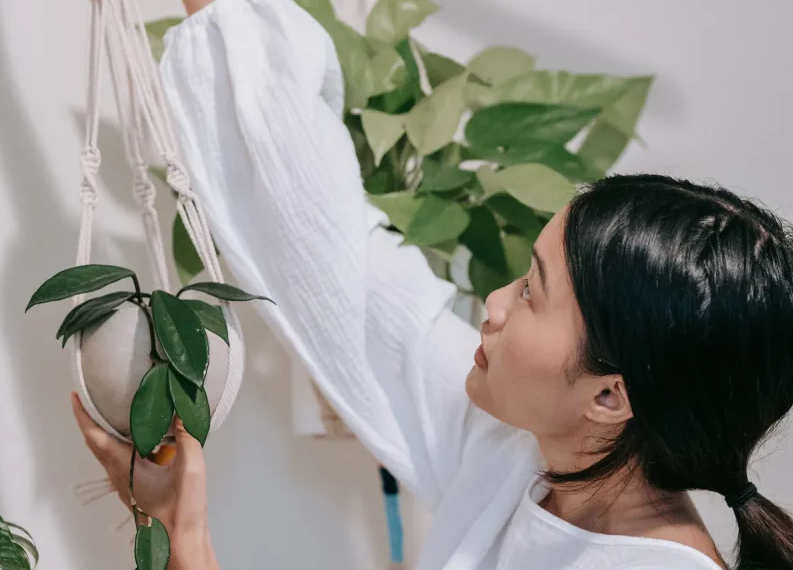
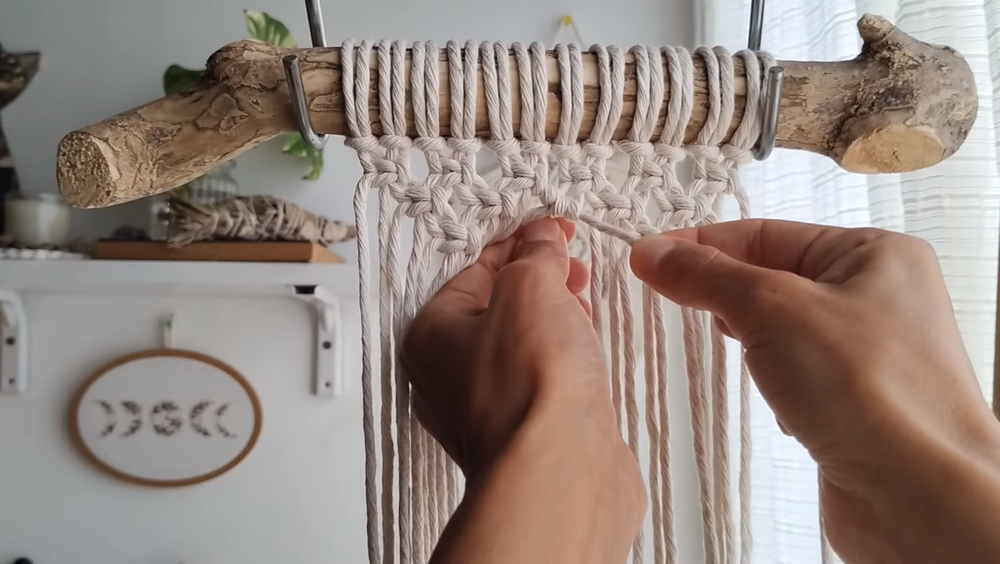

Arte con nudos

Tejiendo Bienestar y Calma
El macramé, más que una simple técnica de tejido decorativo, tiene el poder de brindar beneficios terapéuticos y promover el bienestar emocional. A medida que te sumerges en el arte de tejer con nudos, descubrirás una actividad que va más allá de la creación de hermosas piezas, ofreciendo una experiencia de relajación, concentración y conexión contigo mismo. En este artículo, exploraremos los beneficios terapéuticos del macramé y cómo esta práctica puede ser una herramienta valiosa para mejorar tu salud mental y emocional. Una de las principales ventajas del macramé como actividad terapéutica es su capacidad para inducir un estado de relajación y calma.  El proceso de tejer con nudos requiere atención plena y concentración en cada movimiento, lo que ayuda a despejar la mente de pensamientos estresantes y distracciones. Al sumergirte en el ritmo repetitivo y meditativo del macramé, experimentarás una sensación de tranquilidad y serenidad que te permite desconectar del estrés diario y encontrar un espacio de paz interior. Además, el macramé puede servir como una forma de expresión creativa y una salida para liberar emociones. A medida que tejes, tienes la oportunidad de canalizar tus sentimientos y energías en cada nudo que haces. Puedes encontrar una sensación de liberación y catarsis al crear algo tangible con tus propias manos, convirtiendo tus emociones en algo hermoso y significativo. Esta expresión creativa te permite explorar tu mundo interior, procesar tus experiencias y encontrar un sentido de satisfacción y logro personal. El macramé también fomenta la concentración y el enfoque mental. Al seguir los patrones y realizar los nudos con precisión, entrenas tu mente para estar presente en el momento presente. Esta práctica de atención plena fortalece tu capacidad de concentración y mejora tu habilidad para enfocarte en una tarea específica. A medida que te sumerges en el proceso de creación, puedes experimentar una sensación de flujo, donde el tiempo parece desvanecerse y te conectas profundamente con la actividad en sí misma. Otro beneficio terapéutico del macramé es su capacidad para promover la autoestima y la confianza en uno mismo. A medida que avanzas en tu proyecto, superando desafíos y alcanzando metas, te sientes orgulloso de tus logros y desarrollas una mayor confianza en tus habilidades creativas. Ver tus piezas de macramé terminadas te brinda una sensación de satisfacción y te recuerda tu capacidad para crear belleza y arte. Este sentimiento de autoestima fortalecida se extiende más allá del macramé y puede impactar positivamente otras áreas de tu vida. Además de los beneficios mentales y emocionales, el macramé también puede ser una práctica socialmente enriquecedora. Participar en grupos de tejido o compartir tu trabajo con otros entusiastas del macramé te brinda la oportunidad de conectarte con personas afines y compartir experiencias, ideas y técnicas. El macramé puede convertirse en una forma de construir relaciones y desarrollar una comunidad de apoyo que comparte una pasión común.  En conclusión, el macramé ofrece una serie de beneficios terapéuticos que van más allá de la creación de hermosas piezas tejidas. Al practicar el macramé, te sumerges en un proceso de relajación, expresión creativa, concentración y desarrollo personal. Esta práctica puede ayudarte a reducir el estrés, mejorar tu bienestar emocional, aumentar tu autoestima y fomentar la conexión con otros. ¡Así que atrévete a sumergirte en el mundo del macramé y descubre los beneficios terapéuticos que te esperan en cada nudo tejido!